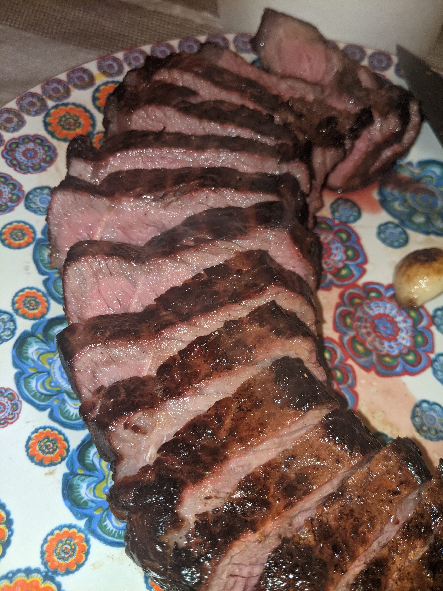

Reverse-Seared Steak

Tender Succulent Reverse-Seared Steak
Reverse searing steak is a great option for cooking thicker steaks. With this method, your steaks are able to a wall to wall pink without overcooking the edges when searing.
Ingredients
- At least a 1 inch steak or thicker of your preffered cut. I am using a NY Strip or sirlion for you brits.
- 1 Tbsp of butter
- a few teeth of garlic
- salt and pepper to taste
Steps
- Generously season your steak with salt and pepper and place on a wired rack and then that rack in a baking sheet.
- Preheat your oven to 250°F
- Once at 250°F place steak in the oven. A thermometer is essential for removing steak at the perfect temperature.
- Remove steak around 15 degrees below your preffered doneness. Temperature guide
- Heat a high smoke point oil in a cast iron skillet.
- Sear the steak for 1 minute on one side, then flip, and then sear steak on both side ends.
- Add the butter and garlic and swirl around the pan. Transfer the garlic and herbs on top of the steak and baste the steak with
the butter using a large spoon. After basting both sides for around a minute.
- Rest the steak for at least 5 minutes before cutting into it
- Enjoy!
Return to Mainpage